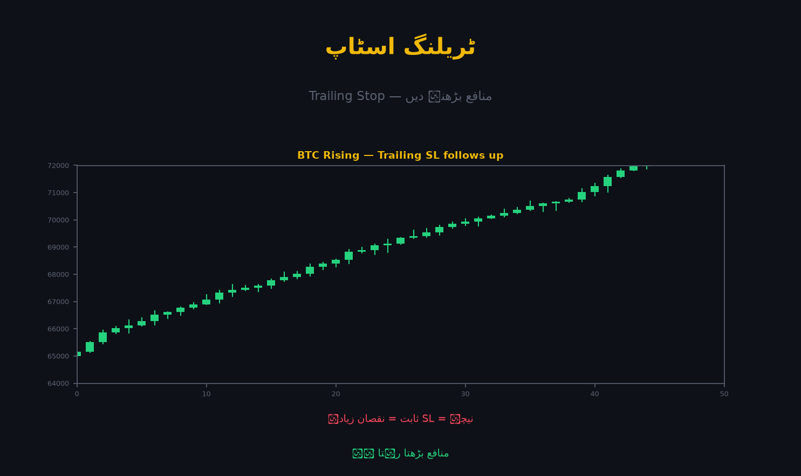

ٹریلنگ اسٹاپ (Trailing Stop) ایک متحرک اسٹاپ ہے جو قیمت کے ساتھ صرف ایک سمت (آپ کے فائدے میں) حرکت کرتا ہے۔ جب مارکیٹ اوپر جاتی ہے تو اسٹاپ بھی اوپر سرکتا ہے؛ جب مارکیٹ پلٹتی ہے تو اسٹاپ اپنی جگہ رُک کر پوزیشن بند کر دیتا ہے — اس طرح چھوٹی واپسی میں منافع نہیں گنوایا جاتا۔

عام اسٹاپ ایک جگہ کھونٹا گاڑ دیتا ہے۔ ٹریلنگ اسٹاپ ایک پٹے کی طرح ہے جو قیمت کے ساتھ آگے بڑھتا ہے مگر پیچھے نہیں کھنچتا۔
قیمت اوپر گئی → اسٹاپ اوپر سرکا ✅
قیمت نیچے گئی → اسٹاپ اپنی جگہ رُکا (نیچے نہیں) 🛡️
قیمت اسٹاپ چھوئی → پوزیشن بند🔴 کلیدی قانون: ٹریلنگ اسٹاپ کبھی نیچے نہیں آتا۔ یہی اس کی پوری طاقت ہے۔
Trailing Delta = اسٹاپ اور موجودہ قیمت کے درمیان کا فاصلہ، فیصد یا مخصوص یونٹ میں۔
Trailing Delta: 2%
موجودہ قیمت: $96,000
اسٹاپ کا فاصلہ: $96,000 × 2% = $1,920
⇒ اسٹاپ: $94,080| Delta | مطلب |
|---|---|
| بہت کم | مارکیٹ کے معمولی جھٹکوں سے بند، جلد مارکیٹ سے باہر |
| بہت زیادہ | منافع زیادہ دیر سے محفوظ، بڑی واپسی کا خطرہ |
| متوازن | ہر منڈی کے اتار چڑھاؤ کے مطابق |
💡 بڑے اتار چڑھاؤ والے کوائن میں چوڑا delta، پرسکون کوائن میں تنگ delta بہتر ہے۔
| اصطلاح | مطلب |
|---|---|
| Activation Price | وہ قیمت جہاں ٹریلنگ اسٹاپ فعال ہونا شروع ہو |
| Callback Rate | جتنی فیصد واپسی پر پوزیشن بند ہو (Binance کی اصطلاح) |
⚠️ اگر Activation Price دیا جائے تو پہلے قیمت وہاں پہنچنا ضروری ہے — ورنہ ٹریلنگ اپنا کام شروع نہیں کرے گا۔
خرید: BTC @ $96,000
Trailing Delta: $3,000
$96,000 → اسٹاپ $93,000
$98,000 → اسٹاپ $95,000
$100,000 → اسٹاپ $97,000
$104,000 → اسٹاپ $101,000 ← چوٹی
وہاں سے کمی: $104,000 → $101,000
اسٹاپ چھو گیا → فروخت @ $101,000
نتیجہ: منافع = $101,000 − $96,000 = $5,000 ✅
(اگر اسٹاپ نہ ہوتا اور قیمت $88,000 چلی جاتی → نقصان)✅ ٹریلنگ نے چوٹی کو نہیں پکڑا، مگر بڑا منافع محفوظ کر لیا — یہی اس کا مقصد ہے۔
| پہلو | مستحکم اسٹاپ | ٹریلنگ اسٹاپ |
|---|---|---|
| حرکت | نہیں ہلتا | صرف ایک سمت |
| سیٹ کرنا | آسان | تھوڑا پیچیدہ |
| سرویر بلند رجحان | منافع جلد بند | منافع کھلا بڑھتا |
| کب بہتر | واضح سطح موجود | مضبوط رجحان (Trend) |
💡 رجحان منڈیوں (Trending markets) میں ٹریلنگ شاندار ہے؛ بازار کے کنارے (Sideways) میں بار بار بند ہو کر مایوس بھی کر سکتا ہے۔
"بہترین تاجر چوٹی پر نہیں بیچتا — وہ چوٹی سے کچھ نیچے بیچتا ہے، اور خوش رہتا ہے۔" ٹریلنگ اسٹاپ اسی فلسفے کا آلہ ہے: پوری چوٹی نہیں، مگر بڑا حصہ محفوظ۔
یاد رکھیں: "اسٹاپ بس اوپر چلے گا، نیچے نہیں چلے گا" — یہی ایک جملہ ٹریلنگ اسٹاپ کی روح ہے۔